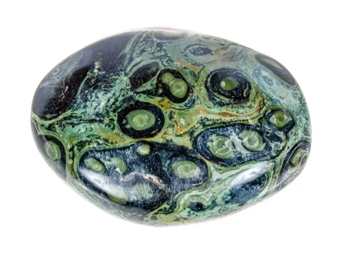

Mineral Grimoire
 Kambaba Jasper
Kambaba Jasper
Kambaba Jasper is a trigonal mineral once believed to be a type of stromatolite with fossilized algae inclusions. However, recent scientific analysis has revealed it is actually a type of rhyolite containing green quartz, aegirine, and potash inclusions that forms in volcanic rocks. Also known as Crocodile Jasper, evidence of its use in jewelry, weapons, and ceremonial tools stretches back over 10,000 years.
Appearance
Dark green to black with distinctive swirling orbs and patterns of lighter green, giving it a primordial, organic appearance.
Colors
Black, dark green, green
Origin
Africa, Brazil, Germany, India, Madagascar, Netherlands
Magickal Properties
Kambaba Jasper is the Divine Masculine in stone form. It invokes and enhances all the masculine qualities: assertiveness, action, independence, adventure, logic, and protection. This stone protects, heals, grounds, and balances, easing fear and mending broken hearts and spirits. It helps you integrate experiences and wisdom from the past and reminds you of who you truly are.
Kambaba Jasper brings the kind of peace of mind that enables you to take clear and decisive action in your life. It enhances your ability to love yourself and others and be open to receiving love in return. Keep it in your workplace to encourage a flow of prosperity and bring forward motion to your career. It aids success and triumph, making it a perfect ally when you need a win.
For more advanced work, Kambaba Jasper holds ancient, medicinal, ceremonial energy. It is considered one of the few shamanic stones that maintains safety and good boundaries during ritual and journey work. This gem is a source of ancient wisdom that facilitates astral travel, channeling, and deep spiritual meditation. Take it with you to places steeped in history to connect with the practices of people who once lived there. Kambaba Jasper also brings healing to those experiencing heartbreak or rejection, helping them find their way back to happiness.
Chakra Work
Kambaba Jasper resonates with both the Root and Heart chakras. Placed on the Root Chakra, it eases fear, provides grounding, and mends broken spirits. Set on the Heart Chakra, it clears worries, opens you to giving and receiving love, and promotes self-love. It can also be gridded around a person or through a room to facilitate and maintain protective boundaries during shamanic journeying.
Partners Well With
Pair Kambaba Jasper with Black Obsidian for deep protective grounding, or with Cassiterite to amplify its connection to ancient wisdom. Chiastolite strengthens its boundary-setting abilities during spiritual work, while Malachite deepens heart healing and transformation. Rose Quartz complements its heart-opening energies with gentle, unconditional love.
Healing
Kambaba Jasper is traditionally associated with soothing the nervous system, easing stress, and supporting overall emotional recovery. It is said to provide protection during deep-sea diving and to aid fishermen in increasing the yield of their catch.
Lore
It was once believed that Kambaba Jasper contained fossilized algae inclusions formed over 22 million years ago, though modern analysis has debunked this theory. Its ancient ceremonial energy and 10,000-year history of use in tools and adornments speak to its enduring significance across cultures.
Magickal Message
Allow me to hold space for you as you heal from life's challenges, bringing you strength and courage. Work with me to feel calm, centered, grounded, and one with the energy of the earth. Own the power of your inner Divine Masculine and be guided by your inherent strength.